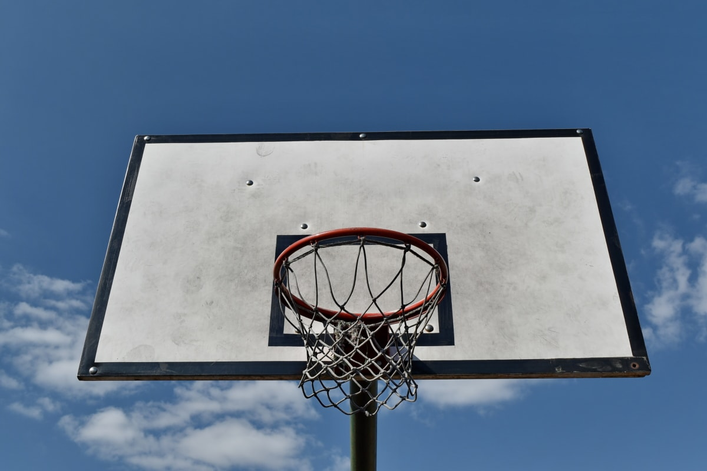

La pallacanestro, conosciuta anche come basket (abbreviazione del termine in lingua inglese basketball), è uno sport di squadra in cui due formazioni di cinque giocatori ciascuna si affrontano per segnare con un pallone nel canestro avversario, secondo tante regole prefissate e con un punteggio che varia dalla posizione di tiro.
Nasce a Springfield (una cittadina statunitense) nel 1891, grazie all'idea di James Naismith, medico ed insegnante di educazione fisica canadese. Dalla fine del XIX secolo, il basket si è diffuso in tutto il mondo, grazie all'attiva propaganda della Federazione Internazionale Pallacanestro, fondata nel 1932. È uno sport olimpico dalla XI Olimpiade, che si tenne a Berlino.
Vedi anche: